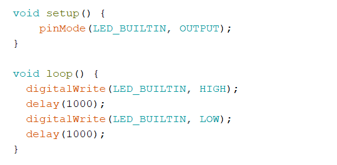
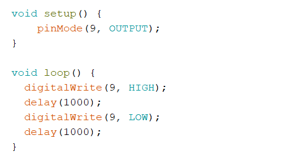
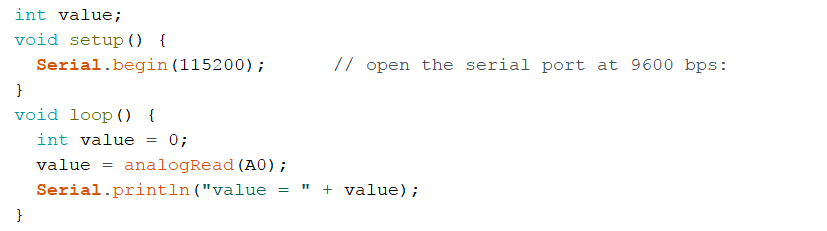
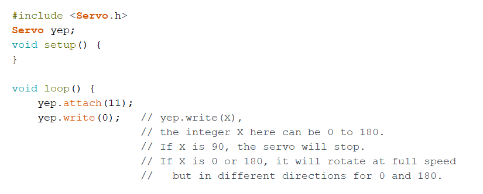
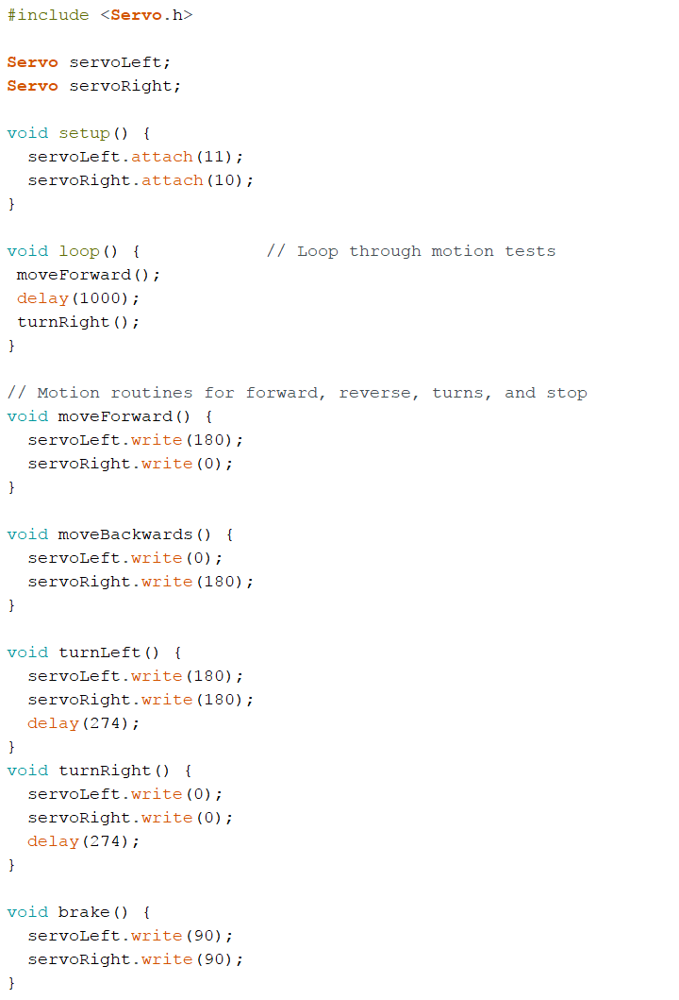

MILESTONE03
Objective
The purpose of this milestone is to implement a working maze mapping algorithm in both the robot and in simulation.
Maze Simulation
First, the simulation team had to decide on different search algorithms to map the maze. Many were considered but only one was eventually implemented. We considered algorithms such as DFS, BFS, A* algorithm, and a simple wall following algorithm. Each had various pros and cons that needed to be considered.
After the code was verified and uploaded to the Uno, the built-in LED on the UNO started to blink.
Modifying the Blink Sketch
Next, we modified the sketch to blink an external LED connected to digital pin 9 on the UNO. The code was as follows:
We added a resistor to lower the current to the LED, as shown in the following image.

The LED blinked on and off, just as the built in LED did in the previous exercise.
Using the Serial Monitor and Analog Pins
For this section we hooked up a potentiometer to one of the Arduino’s analog pins. The pot is a variable resistor, and is used in a voltage divider circuit to provide an output to the pin of between 0V and 5V, depending on its position.
To output the measured values, we used the Serial library and the Arduino IDE’s serial monitor tool.
Here is the code that we used:
When run, here’s what happens:

Using the Arduino for Analog Output
To output an analog signal from the Arduino, we chose a digital pin with pulse-width modulation capability. We connected this pin to the LED in series with a resistor. The circuits below show the LED and potentiometer connected to the arduino, as well as the different levels of brightness of the LED.


We added to our code from the previous section in order to use the potentiometer to adjust the LED brightness. We added a map function that would map the input range (0-1023 for the analog pin) to the correct output range (0-255 for the digital pin). We then used the analogWrite function to write the output value to the digital pin we had chosen. The following oscilloscope graph shows the frequency of the signal and its response to changing analog values.

Applying the Parallax Servos
One of the most important functions for a robot to discover the maze is the ability to “walk”. Here, we used Parallax Continuous Rotation Servos. The white wire was connected to the digital pin “~11” with PWM capability. The red wire was connected to 5V output pin and the black wire was connected to ground “GND”. The oscilloscope was attached to check the frequency and maximum/minimum duty cycle. The code is listed below.
When ran, the oscilloscope looked like:

When the servo ran at full speed as X for yep.write(X) was 0, the duty cycle was 0.5/20=0.025. When the servo stopped as X was 180, the duty cycle was 1.5/20=0.075.
The potentiometer was then connected to the servo running with the same code above.
Let the Robot Run!
Finally, we assembled the robot as shown below:


To let the robot drive in a square, the code was listed below:
The robot ran as shown below: